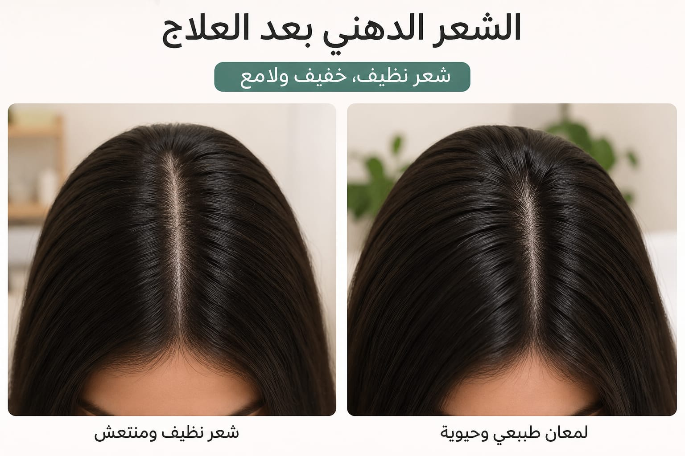

Oily Hair
Oily hair happens when the scalp produces too much natural oil (sebum).
Causes
- Overproduction of sebum (زيادة إفراز الدهون في فروة الرأس)
- Hormonal changes
- Washing hair too frequently
- Using heavy hair products or oils on scalp
- Touching hair too much with hands
- Stress and unhealthy diet
- Environmental pollution
Treatment
- Using gentle shampoo for oily hair
- Washing hair regularly but not excessively
- Avoid applying conditioner on scalp (apply only on ends)
- Keeping scalp clean and balanced
- Using lightweight hair products
- Eating a balanced diet and drinking water
- Avoiding stress as much as possible
Best Oils
- Tea tree oil → controls oil and cleans scalp
- Jojoba oil → balances natural oil production
- Lemon oil → refreshes scalp and reduces grease
- Grapeseed oil → lightweight and non-greasy
Warnings
- Avoid using heavy oils on the scalp
- Do not wash hair too many times a day
- Avoid touching hair frequently
- Do not use greasy styling products
- Avoid skipping proper scalp cleansing
- Don’t apply conditioner on hair roots

After treatment
Back